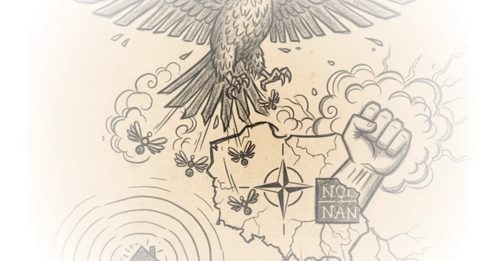

In a moment where geopolitical shockwaves are reshaping alliances, Good Times Bad Times delivers a startling assessment: the recent incursion of Russian drones into Polish airspace was not a tragic accident, but a deliberate, low-cost probe designed to expose NATO's expensive vulnerabilities. The author argues that Moscow is betting on Western hesitation, forcing the alliance to spend millions of dollars to shoot down drones worth the price of a mid-range car. This is not just a military report; it is a warning that the rules of engagement are being rewritten in real-time.
The Asymmetry of Cost
Good Times Bad Times frames the incident as a masterclass in asymmetric warfare. The author writes, "When more than 20 drones are involved, some of them entering from Belarusian territory, the idea of an accident can be ruled out. It was deliberate." This distinction is crucial. While Ukraine faces bombardments of a scale hundreds of times greater daily, the specific breach of NATO territory changes the political calculus entirely. The author notes that the attack forced the shutdown of four major Polish airports and required the scrambling of F-16s, F-35s, and Patriot batteries. As Good Times Bad Times puts it, "The cost of symmetry is dramatic, amounting to tens of millions of dollars." This framing effectively highlights the economic trap Russia is setting: using cheap, mass-produced systems to drain the resources of a high-tech alliance.

Former NATO commander General Ben Hodges is cited to reinforce this point, noting that the alliance "is not adequately prepared and lacks mechanisms for dealing with such threats." The commentary here is sharp. It suggests that relying on high-end fighter jets to intercept "styrofoam drones" is a losing strategy. Critics might note that the sheer speed and unpredictability of drone swarms make interception difficult regardless of cost, but the author's point about the strategic drain remains potent.
The mere fact that NATO had to scramble F-16s, F-35s, Patriot batteries, and other systems to neutralize drones worth about as much as a mid-range car shows that the alliance is not adequately prepared.
The Risk of Normalization
The piece pivots to the long-term consequences, arguing that a passive response could be catastrophic. Good Times Bad Times warns, "If the alliance's response is limited to this alone, Moscow will almost certainly repeat the tactic again against Poland, but also against the Baltic States or Finland on a cyclical basis." The author fears a slide into a "gray zone of hybrid warfare" where Russian strikes become a normalized, permanent feature of the security landscape. This is a compelling, if terrifying, thesis. The author suggests that mere condemnation is insufficient and risks provoking further aggression.
To counter this, the text proposes a controversial solution: a symmetric retaliatory response. Good Times Bad Times writes, "After 19 or more drones were launched into Poland, an identical number should be launched by the alliance against Russian territory or against Russian systems stationed in Belarus." The author argues this would paradoxically de-escalate tensions by removing the incentive for repetition, citing the India-Pakistan dynamic as a precedent. However, this is the argument's most fragile point. A counterargument worth considering is that a kinetic exchange between nuclear powers, even a limited one, carries an unacceptable risk of miscalculation that could spiral out of control, a risk the author acknowledges but perhaps underestimates.
The Path Forward
Despite the political hesitation, the author identifies a more viable path: leveraging the EU's new SAFE program to integrate Ukrainian and Polish defense industries. Good Times Bad Times notes that Brussels announced the allocation of nearly 44 billion euros to Warsaw, funds that could support "joint projects with partners like Ukraine." The author argues that "Ukraine fighting for its very survival has developed an extensive and above all cheap domestic drone industry," and that NATO should partner with it rather than just defending against it. This shifts the narrative from passive defense to active industrial mobilization.
The piece also touches on the potential for economic warfare, suggesting that the US might pressure allies to impose a 100% sanction on China and India to cut off Russian oil revenue. Good Times Bad Times writes, "If the embargo also covered Turkey and the EU itself, which still imports around 9%, it would wipe out 96% of Russia's export market." Yet, the author remains skeptical, pointing out that "the hesitation and lethargy of Europe's leaders, coupled with Donald Trump's naive posture, suggests the likelihood is low." This skepticism grounds the piece in political reality, acknowledging that while the military and economic tools exist, the political will may not.
Bottom Line
Good Times Bad Times offers a rigorous, if unsettling, analysis of how a single night of drone strikes could redefine the security architecture of Europe. Its strongest argument is the exposure of the cost asymmetry that favors Moscow, while its most vulnerable point is the feasibility of a symmetric kinetic retaliation. Readers should watch for whether NATO moves beyond condemnation to the industrial and economic integration the author deems necessary, or if the alliance remains trapped in a cycle of expensive, reactive defense.